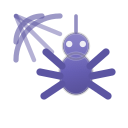
Araneola
High-performance web crawler and sitemap generator, pure Guile Scheme
One hand-drawn icon per project in ~/Hacking, drawn the way Tela
draws its own: each icon is an object — a document, a disc, a folder, a
terminal, a cloud — in Tela's palette, with white detail and a soft corner
shade. 64×64 vector sources, 16–512 px exports, a unique silhouette and glyph
per project. Contact sheet.

High-performance web crawler and sitemap generator, pure Guile Scheme
Encryption, authentication and authorization toolkit for Guile
Readable CI/CD orchestrator: pipelines as Lisp, streamed live
GitHub Actions workflow and action bridging into byggsteg jobs
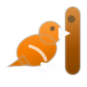
Woodpecker CI image that runs byggsteg jobs and reports the outcome
Static site for the water fun park in Carvoeiro, Algarve
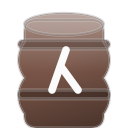
Declarative macOS dotfiles in Scheme, driven by the caco CLI
Declarative secret management and deployment in Guile Scheme
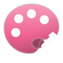
Archive of collected digital artwork, released under CC0
Free monads and composable functors for embedded DSLs in Haskell
Guile Glyph Generator: SVG logos and status badges from Lisp
Generates idiomatic Guile server and client code from an OpenAPI 3 spec
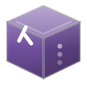
GNU Guix channel packaging the whole jointhefreeworld collection
Declarative Bash configuration and prompt, generated from Scheme
Modular, reproducible Emacs configuration built with Elpaca
Modular, programmable GNU/Linux desktop written as Scheme modules
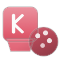
GTK4 window showing the desktop's keybindings, wallpapers and palettes
Cozy, accessible server-rendered UI framework: SXML in, HTML out
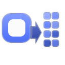
Turns macOS .icns trees into a reproducible freedesktop icon theme
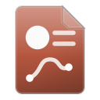
Multi-language CV generator: one Scheme file to HTML and plain text
Personal homepage, blog and movement site built from Org with Emacs
Batteries-included utility library for Guile Scheme programming
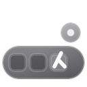
Wayland dock in C and GTK4, with a live Guile Scheme brain
Bookmark manager and archive that exports HTML, Markdown, Org and XBEL
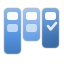
Free project management: multi-project workspace with kanban boards
Infinitely extensible command runner and project automator in Scheme
Emacs integration for maak: discover, inspect and run tasks from Emacs
Clean, fast, tree-sitter aware Emacs mode line
Checksummed SQL migrations for SQLite, PostgreSQL, CockroachDB and MySQL
Nix flake carrying the whole jointhefreeworld package collection
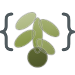
Utility-first vanilla CSS framework generated with Scheme
Guile library that parses Org-mode with PEG and renders HTML, Markdown or SXML
Lisp-powered notification nexus: HTTP in, queued and retried SMTP out
Personal knowledge vault: diary, contacts, career and engineering notes
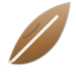
Structured, levelled, taggable logging for GNU Guile
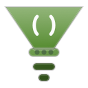
Dialect-aware formatter, linter and language server for Scheme and the Lisps
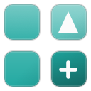
Project scaffolding and templating with S-expression templates
Skeuomorphic Linux icon theme built from painted objects, in 30 variants
Privacy-friendly, free analytics core that records events, not people
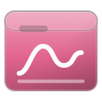
React dashboard that visualises a symbanta instance without surveillance
Proportional, scale-relative Emacs face sizes from nano to colossal
Artemis service that sinks remote URLs into a local media archive
Guile test framework where a test is a form and the report is a hierarchy
Emacs integration for the Veritas test framework: run, report, navigate
Small, calm, theme-respecting welcome screen for Emacs
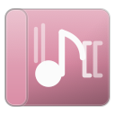
Collaborative music wiki built with GNU Artanis and Guile
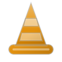
Dependency-free maintenance and coming-soon status page
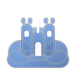
Hetzner Cloud infrastructure managed from the REST API
Music player for Emacs with pluggable MPD, mpv, SSH and local backends
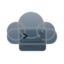
Personal cloud and server fleet provisioned as a Guile program
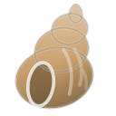
Wayland shell in C, GTK4 and Guile: status bar, launcher and notifications